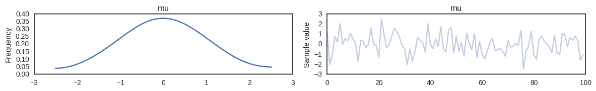
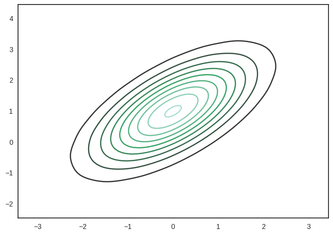
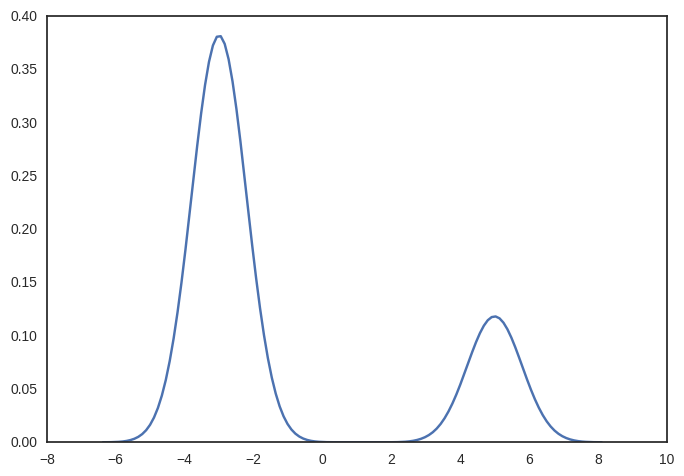
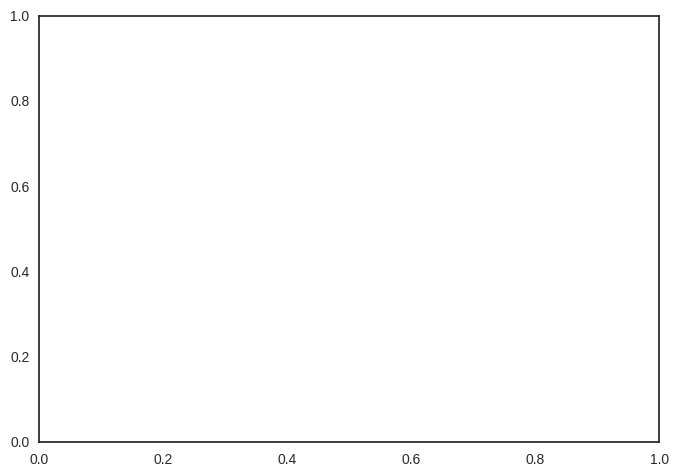

In [1]:
%matplotlib inline
import theano
#theano.config.floatX = 'float64'
import pymc3 as pm
import theano.tensor as tt
import theano
import sklearn
import numpy as np
import matplotlib.pyplot as plt
import seaborn as sns
sns.set_style('white')
In [2]:
with pm.Model():
pm.Normal('mu', mu=0, sd=1)
trace = pm.variational.svgd()
100%|██████████| 5000/5000 [00:10<00:00, 480.77it/s]
In [3]:
pm.traceplot(trace);

In [4]:
with pm.Model():
pm.MvNormal('mu',
mu=np.array([0., 1.]),
cov=np.array([[1., .75],
[.75, 1.]]),
shape=2)
trace = pm.variational.svgd()
100%|██████████| 5000/5000 [00:07<00:00, 675.94it/s]
In [5]:
sns.kdeplot(trace['mu'])
Out[5]:
<matplotlib.axes._subplots.AxesSubplot at 0x7fe4428b5198>

In [9]:
with pm.Model():
pm.NormalMixture('mixture',
w=np.array([.8, .2]),
mu=np.array([-3., 5.]),
sd=np.array([1., 1.]))
#trace_nuts = pm.sample(500)
trace_svgd = pm.variational.svgd(jitter=4., n_particles=800, n=400)
100%|██████████| 400/400 [00:50<00:00, 8.99it/s]
In [10]:
#sns.distplot(trace_nuts['mixture'], hist=False)
sns.distplot(trace_svgd['mixture'], hist=False)
/home/wiecki/miniconda3/lib/python3.5/site-packages/statsmodels/nonparametric/kdetools.py:20: VisibleDeprecationWarning: using a non-integer number instead of an integer will result in an error in the future
y = X[:m/2+1] + np.r_[0,X[m/2+1:],0]*1j
Out[10]:
<matplotlib.axes._subplots.AxesSubplot at 0x7fe4437cdbe0>

In [7]:
mix = pm.NormalMixture.dist(
w=np.array([.8, .2]),
mu=np.array([-3., 5.]),
sd=np.array([1., 1.]))
x = np.linspace(-8, 12, 100)
input = tt.dscalar('input')
input.tag.test_value = 1.
mix_eval = theano.function([input], [tt.exp(mix.logp(input))])
plt.plot(x, [mix_eval(i) for i in x], label='Posterior')
sns.distplot(trace_nuts['mixture'], label='NUTS', hist=False)
sns.distplot(trace_svgd['mixture'], label='SVGD', hist=False)
plt.legend()
---------------------------------------------------------------------------
ValueError Traceback (most recent call last)
<ipython-input-7-4378f373f94c> in <module>()
7 input.tag.test_value = 1.
8 mix_eval = theano.function([input], [tt.exp(mix.logp(input))])
----> 9 plt.plot(x, [mix_eval(i) for i in x], label='Posterior')
10 sns.distplot(trace_nuts['mixture'], label='NUTS', hist=False)
11 sns.distplot(trace_svgd['mixture'], label='SVGD', hist=False)
/home/wiecki/miniconda3/lib/python3.5/site-packages/matplotlib/pyplot.py in plot(*args, **kwargs)
3159 ax.hold(hold)
3160 try:
-> 3161 ret = ax.plot(*args, **kwargs)
3162 finally:
3163 ax.hold(washold)
/home/wiecki/miniconda3/lib/python3.5/site-packages/matplotlib/__init__.py in inner(ax, *args, **kwargs)
1817 warnings.warn(msg % (label_namer, func.__name__),
1818 RuntimeWarning, stacklevel=2)
-> 1819 return func(ax, *args, **kwargs)
1820 pre_doc = inner.__doc__
1821 if pre_doc is None:
/home/wiecki/miniconda3/lib/python3.5/site-packages/matplotlib/axes/_axes.py in plot(self, *args, **kwargs)
1380 kwargs = cbook.normalize_kwargs(kwargs, _alias_map)
1381
-> 1382 for line in self._get_lines(*args, **kwargs):
1383 self.add_line(line)
1384 lines.append(line)
/home/wiecki/miniconda3/lib/python3.5/site-packages/matplotlib/axes/_base.py in _grab_next_args(self, *args, **kwargs)
379 return
380 if len(remaining) <= 3:
--> 381 for seg in self._plot_args(remaining, kwargs):
382 yield seg
383 return
/home/wiecki/miniconda3/lib/python3.5/site-packages/matplotlib/axes/_base.py in _plot_args(self, tup, kwargs)
357 x, y = index_of(tup[-1])
358
--> 359 x, y = self._xy_from_xy(x, y)
360
361 if self.command == 'plot':
/home/wiecki/miniconda3/lib/python3.5/site-packages/matplotlib/axes/_base.py in _xy_from_xy(self, x, y)
219 raise ValueError("x and y must have same first dimension")
220 if x.ndim > 2 or y.ndim > 2:
--> 221 raise ValueError("x and y can be no greater than 2-D")
222
223 if x.ndim == 1:
ValueError: x and y can be no greater than 2-D
